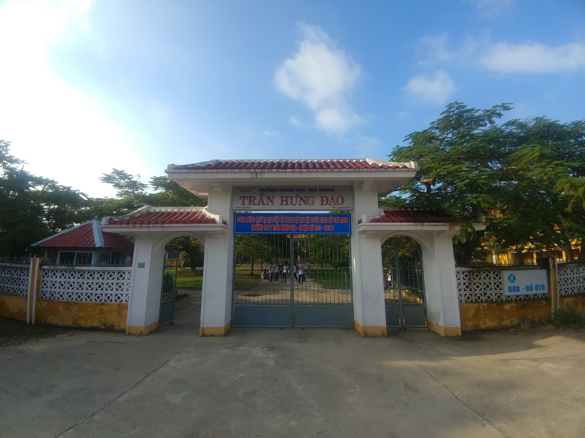
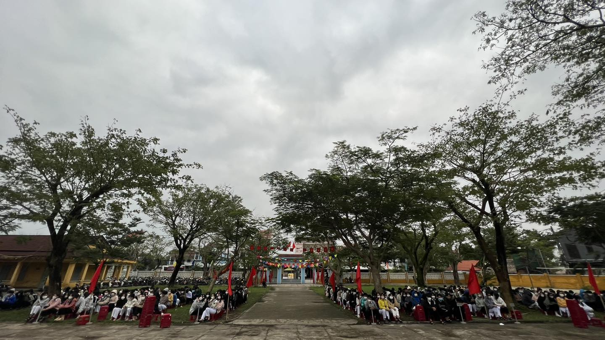
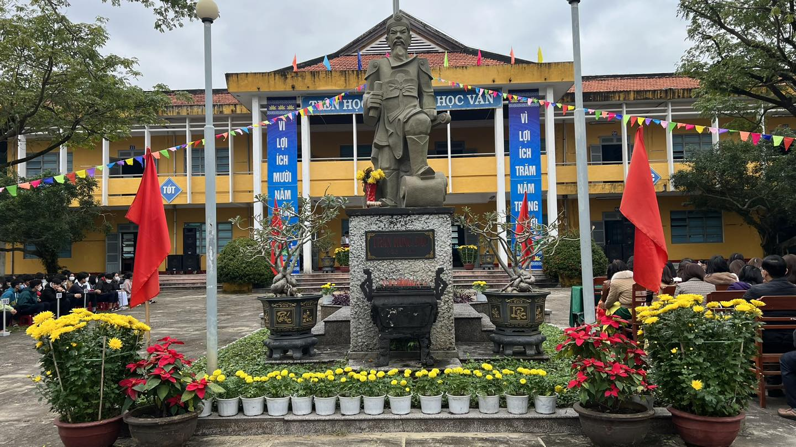

Vài nét về sự hình thành và phát triển của Trường THPT Trần Hưng Đạo
Là một trong những ngôi trường THPT mới thành lập không lâu tại tỉnh Quảng Nam, tuy nhiên có rất nhiều phụ huynh, học sinh lựa chọn ngôi trường này để gửi gắm thanh xuân 3 năm học của mình. Trường THPT Trần Hưng Đạo không ngừng thay đổi, hoàn thiện mình hơn nữa để mang tới chất lượng giáo dục tốt nhất cho học sinh.
Trường THPT Trần Hưng Đạo là một trong 4 trường cấp 3 mới được UBND tỉnh Quảng Nam thành lập và hoạt động vào năm 2009-2010. Trường có địa chỉ tại Hội An, thuận tiện giao thông đi lại, được nhiều học sinh các khu vực lân cận đăng ký nhập học.
Điểm tuyển sinh đầu vào qua các năm của trường THPT Trần Hưng Đạo khá ổn định, nhà trường dựa theo nhiều tiêu chí xét tuyển để chọn lọc thí sinh chất lượng, tốt. Hiện nay nhà trường xét tuyển vào lớp 10 qua hình thức điểm thi vào lớp 10 và xét học bạ của 4 năm học THCS. Điểm tuyển sinh sẽ dao động từ 25-30 điểm tùy thuộc vào số lượng hồ sơ đăng ký và xét tuyển. Nhà trường sẽ chọn từ cao xuống thấp cho đến khi đủ chỉ tiêu số lượng học sinh. Để có thể biết chính xác điểm xét tuyển đầu vào của trường THPT Trần Hưng Đạo bạn có thể truy cập website hoặc gọi hotline nhà trường để cập nhật nhé.
Vì mới ra đời trong thời gian ngắn, nên cơ sở vật chất và trang thiết bị học tập của trường THPT Trần Hưng Đạo được đầu tư chỉnh chu và đầy đủ. Nhà trường còn được các lãnh đạo của tỉnh Quảng Nam hỗ trợ để có hệ thống học tập tốt và hoàn thiện nhất cho học sinh theo học tại đây. Tại trường các phòng học đầy đủ bàn ghế, đồ dùng học tập hỗ trợ quá trình giảng dạy và học của giáo viên học sinh. Nhà trường cũng xây dựng thêm các phòng chức năng riêng như phòng thực hành thí nghiệm bộ môn Hóa- Sinh – Lý, phòng Tin học có đầy đủ internet, máy tính để cho học sinh tiếp cận với công nghệ và ứng dụng CNTT vào trong học tập. Trường cũng có khu nhà bộ hiệu, phòng giáo viên đầy đủ để tổ chức các buổi họp, đào tạo cán bộ giáo viên nhà trường tiện lợi nhất. Không gian cảnh quan sân trường có ghế đá, cây xanh, khu học tập thể dục, hoạt động ngoại khóa mang đến môi trường xanh –sạch –đẹp, chất lượng giáo dục tốt nhất.
Những thành tích và nỗ lực mà thầy và trò nhà trường Trần Hưng Đạo đã đạt được trong suốt những năm tháng hình thành và phát triển thì hẳn bạn đã đánh giá được trường THPT Trần Hưng Đạo có tốt không? Về chất lượng đào tạo, trường THPT Trần Hưng Đạo có tạo sự chuyển biến mạnh mẽ ở công tác giáo dục và giảng dạy, đạt được nhiều kết quả học tập tốt. Với hơn 297 học sinh giỏi chiếm 33% tổng số học sinh và tăng hơn 4% so với năm học trước. Trường cũng có nhiều đội học sinh giỏi đạt vị trí cao trong thi các cấp trường THPT tỉnh Quảng Nam. Bên cạnh đó, trường THPT Trần Hưng Đạo có 01 giáo viên đoạt giải ba vòng chung kết Liên hoan báo cáo viên toàn quốc do Trung ương Đoàn TNCS Hồ Chí Minh tổ chức, nhiều thầy cô giáo được công nhận giáo viên dạy giỏi cấp tỉnh trao tặng. Đội ngũ giáo viên không ngừng được nâng cao chất lượng về chuyên môn, được áp dụng những phương pháp dạy học mới để mang đến hứng thú cho học sinh bằng việc thường xuyên tham gia các lớp tập huấn do tỉnh tổ chức. Ngoài việc học các kiến thức học thuật trên lớp, nhà trường Trần Hưng Đạo cũng chú trọng đến các hoạt động ngoại khóa, tổ chức văn nghệ, thể dục thể thao nâng cao kỹ năng mềm cho học sinh trong thời đại mới.
Học phí trường THPT Trần Hưng Đạo sẽ đóng theo quy định của Bộ giáo dục và đào tạo tỉnh Quảng Nam. Ngoài khoản học phí, mỗi học sinh cũng phải đóng thêm một số khoản phụ phí như phí vệ sinh, phí cơ sở vật chất, phí gửi xe (nếu có),...Các khoản phí phải đóng được thay đổi và cập nhật theo từng kỳ học. Vì vậy, để nắm được thông tin chính xác nhất về học phí và các khoản phải đóng, phụ huynh có thể liên hệ trực tiếp với bộ phận hành chính của trường cấp 3 này để hỗ trợ. Chắc hẳn với những thông tin chúng tôi cung cấp trên đây đã giúp bạn đọc hiểu rõ hơn và có thể đưa ra đánh giá trường THPT Trần Hưng Đạo có tốt không, từ đó đưa ra quyết định đúng đắn cho việc lựa chọn trường cấp 3 trên địa bàn tỉnh Quảng Nam.